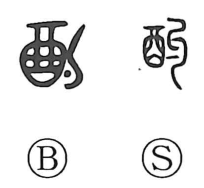

酌

Kun: kumu, kumikawasu | On: shaku
to ladle ・ to pour sake ・ to serve drinks
Explanation
酌 is a phono-semantic graph: 勺, read shaku and shaped like a ladle, supplies the sound, while 酉, the wine jar, provides the meaning. Together they depict drawing wine from a cask with a ladle. In early usage it evokes pouring wine into cups and letting it circulate among guests—the exchanging of cups in a convivial drinking bout. Because ladling entails apportioning the amount, the character naturally extended to the idea of gauging and adjusting to circumstances, as reflected in compounds like 斟酌 and 酌量, where it denotes thoughtful consideration and measured allowance.